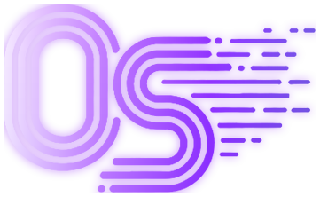

How to ODS
Built in ODS Portal with Qwen3.5-4BSearch every ODS guide, or paste an error message. Every result is quoted straight from the ODS repo, with a link to the exact line.

Search every ODS guide, or paste an error message. Every result is quoted straight from the ODS repo, with a link to the exact line.